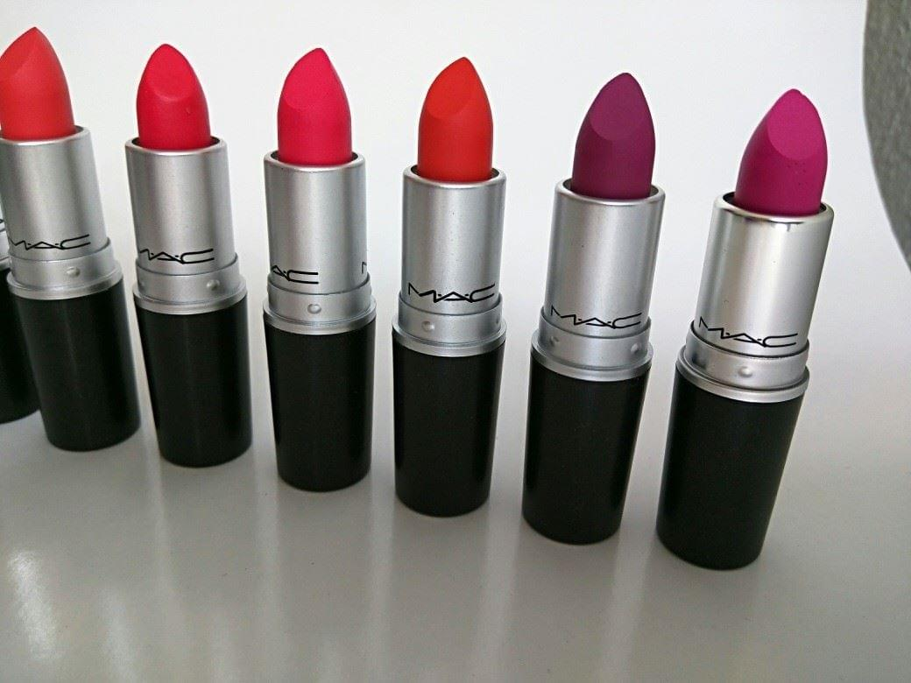

Pintalabiso en barra de acabado mate

MEl acabado mate es una de las tendencias más empleadas en la actualidad.
El acabado que ofrecen es el de, evidentemente, un color mate pero muy intenso,
debido a que en su composición se incluye una mayor pigmentación que en otros tipos de pintalabios.
Por lo general, con realizar una única pasada sobre el labio este ya queda totalmente cubierto.
A consecuencia de la densidad de color que ofrecen, son muy opacos una vez han sido aplicados sobre el labio y
a diferencia de las barras de textura cremosa, se deslizan con bastante dificultad sobre la piel.
El segundo tipo de pintalabios disponible en el mercado es el pintalabios líquido.
Su formato es totalmente diferente al pintalabios en barra, asemejándose más al aspecto de un pintauñas.
Consisten en un pequeño frasco, en el cual se introduce un pincel de reducidas dimensiones utilizado para la aplicación del producto.
En los últimos años, este tipo de pintalabios ha sufrido un importante auge de su popularidad y, como en el caso de las barras de labios,
se pueden encontrar diferentes tipos.